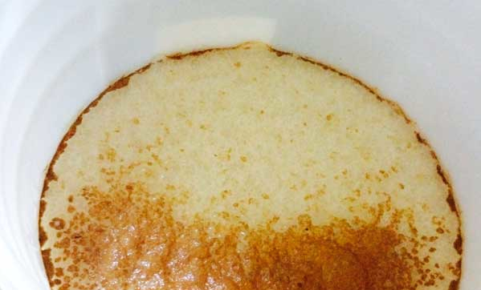

<section id="highlighted" class="primary highlighted dark-text">
  <div class="inner">
    <h2 class="section-hed">Featured stories</h2>
    <ul class="related">
      <li class="outgoing"> 
        <a href="http://www.seattletimes.com/life/food-drink/whats-an-american-pale-ale-understanding-the-style-we-will-be-brewing/">
          
          <div class="hed">What’s an American pale ale? Understanding the style we will be brewing</div>
        </a>

      <li class="outgoing"> 
        <a href="http://www.seattletimes.com/life/food-drink/strange-brews-experimentation-are-a-fun-part-of-making-beer-at-home/">
          
          <div class="hed">Strange brews, experimentation are a fun part of making beer at home</div>
        </a>

      <li class="outgoing"> 
        <a href="http://www.seattletimes.com/life/food-drink/your-questions-about-homebrewing-answered/">
          
          <div class="hed">Your questions about homebrewing, answered</div>
        </a>
    </ul>
  </div>
</section>